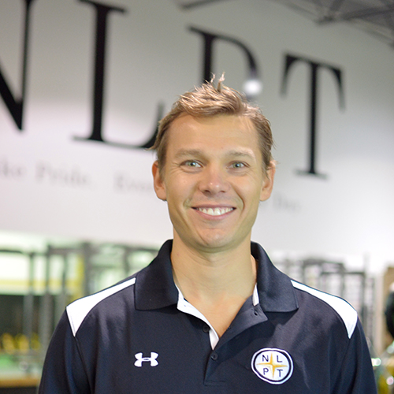

I was born and raised in the small New England town of Brunswick, Maine. But in 2003, at age 16, left my home (with Mom's blessing) and moved north to Ontario, Canada to pursue my dreams of professional hockey. After three seasons and little progress, I decided it was time to move on from the game and I set my sights on an education.
In 2007, I graduated from the University of Waterloo (Waterloo, Ontario, Canada) with a degree in Honours Kinesiology. From there, I went on to study motor learning and skill acquisition in the Faculty of Medicine at the University of Toronto, and graduated with a Master's in Rehabilitation Science in 2009.
In addition to my interests in skill development, it was at this time that I was developing another passion for athletic performance, physical development, and teaching. So after graduation, I decided that rather than pursuing a PhD and a career in academia, I would throw myself into the world of coaching.
My first experience as a coach was in early 2009 where I worked as a Hockey Director in Nashville, Tennessee. During my year and a half in that position, I was a coach on three separate hockey teams, gave private on-ice lessons to young players, and began working with several athletes as their strength and conditioning coach.
Then in 2010, I became a Certified Strength and Conditioning Specialist through the NSCA, and moved back to Canada to take the job as Head Strength and Conditioning Coach at Next Level Performance Training in Cambridge, Ontario.
Today, I continue to work at NLPT and am currently serving as Director of Training. My main responsibilities include overseeing the program design philosophy, sales, operations, content creation and managing the coaching staff.
On the side, I enjoy creating small websites for my family and friends, running, and playing guitar. I love dogs, reading, good wine, and of course, Chanelle.
Education
University of Toronto Toronto, ON, Canada, 2007-2009
Master's of Science, Rehabilitation Science
- Graduate thesis: The role of simulation in rehabilitation: The effectiveness of model hands when learning to make orthoses
- Supervised by Heather Carnahan, PhD
Additional activities
- Research assistant in Mt. Sinai Surgical Skills Lab. Collected and analyzed data both in a controlled laboratory and operating room setting.
- Presented at various medical conferences and academic meetings.
- Served in the University of Toronto Summer Mentorship Program during July 2008
University of Waterloo Waterloo, ON, Canada, 2003-2007
Bachelor's of Science, Honours Kinesiology
- Honours thesis: Criterion-based learning and the retention of a motor skill
- Supervised by Richard Staines, PhD
Additional activities
- Research assistant in motor control lab with Dr. Heather Carnahan and Dr. Adam Dubrowski.
- Volunteered as an assistant at the on-campus physiotherapy clinic.
Work
Next Level Performance Training Cambridge, ON, Canada
Director of Training 2015-Present
In charge of general training philosophy, operations, marketing and sales, staff, and online presence of NLPT.
- Principle coach and program designer of NLPT’s High Performance summer program for elite and professional athletes.
- Lead salesperson for NLPT’s programs and services.
- Created training and coaching systems for NLPTfit, NLPT’s adult fitness training program.
- Designed, built, and wrote copy for company website www.mynlpt.com.
- Hired and trained coaching staff for various programs.
Head Strength and Conditioning Coach 2012-2015
In charge of all athlete and fitness programming, served as the company’s lead coach, and managed data for all clientele.
- Designed training and coaching systems for NLPT’s athlete programs.
- Coordinated with strength coaches from NHL, NCAA, and Team Canada in designing training programs for athletes enrolled in both NLPT and those respective programs.
- Created attendance tracking and assessment analysis data systems.
Strength and Conditioning Coach 2010-2012
Designed training programs for and coached NLPT’s athletes and adult fitness clientele.
- Assessed and wrote individualized programs that supported clients’ health and injury history, training background, movement limitations, and performance needs.
- Coordinated with medical professionals in the design and implementation of client rehabilitation programs.
- Coached and designed training systems for NLPT’s youth program.
A-Game Sportsplex Franklin, TN, USA
Associate Hockey Director 2009-2010
Assisted in the administration of the area’s youth hockey organization and highly involved as an on and off-ice coach.
- Administered A-Game’s adult recreational hockey league.
- Head coach of Peewee AA hockey team and assistant at the AAA Bantam and high school level specializing in goaltending instruction.
- Provided private on-ice lessons for young hockey players as well as off-ice strength and conditioning coaching.
Healthways Nashville, TN, USA
Intern with MyHealthIQ Department Summer 2006, 2007, 2008
Full-time summer internship at Healthways, a disease management and wellness company.
- Gathered data for myHealthIQ, a health screening and wellness program, to develop a participant satisfaction rating from unknown to 97%.
- Researched and reported on various incentive companies to integrate with myHealthIQ’s existing incentive structure.
- Assisted with on-site employee screening, implementation of programs, and analysis of biometric results.
Publications
Peer Reviewed Journals
Hagemann, E., Williams, C.K., McKee, P., Stefanovich, A., & Carnahan, H. (2014). Using model hands for learning orthotic fabrication. American Journal of Occupational Therapy, 68, 86-94.
Walsh, C.M., Hagemann, E., Dubrowski, A., & Carnahan, H. (2013). Proficiency attained at the end of practice best predicts retention performance: Support for a competency-based approach to procedural skills training. Procedia - Social and Behavioural Science, 93, 371-375.
Stefanovich, A., Williams, C.K., McKee, P., Hagemann, E., & Carnahan, H. (2012). Development and validation of tools for evaluation of orthosis fabrication. American Journal of Occupational Therapy, 66, 739-746.
Academic presentations
Walsh, C.M., Hagemann, E., Dubrowski, A., & Carnahan, H. Proficiency attained at the end of practice best predicts retention performance: Support for a competency-based approach to procedural skills training. World Conference on Learning, Teaching and Educational Leadership. October 2012, Brussels, Belgium.
Grierson, L. E. M., Hagemann, E., Zelek, J., & Carnahan, H. The efficacy of a wearable tactile way-finding device. Presented at the 2nd Annual International Multi- Conference on Engineering and Technology Innovation: IMETI 2009, July 2009,Orlando, Fl.
*Hagemann, E., McKee, P., & Carnahan, H. Learning to Make Orthoses with Simulation. Health Professions Education Global Best Practices in Simulation May, 2009, Toronto, ON.
Hagemann E, McKee P, Carnahan H. Learning to make orthoses with simulation. Toronto Rehabilitation Institute Research Day, November 2008, Toronto, ON.
Safir, O., Hagemann, E., Dubrowski, A., Backstein, D., & Carnahan. H. Self-directed practice when learning suturing skills enhances learning. Association for Surgical Education. May, 2008, Salt Lake City, Utah.
Safir O, Hagemann E, Dubrowski A, Backstein D, Carnahan H. Self-directed practice facilitates learning of a complex suturing task. Wilson Center Research Day, October, 2008, Toronto, ON.
Carnahan H, Dubrowski A, Walsh C, Hagemann E. The Role of Simulation in the Education of Rehabilitation Professionals. ACRM, October 2008, Toronto, ON.
Safir O, Hagemann E, Dubrowski A, Backstein D, Carnahan H. The Influence of Self-Directed Practice on Learning Suturing Skills in a Simulated Environment. The Royal College of Physicians and Surgeons of Canada Annual Conference, September 2008, Ottawa, ON.
Safir O, Hagemann E, Dubrowski A, Backstein D, Carnahan H. The influence of visuomotor simulation training on arthroscopy performance. NASPSPA, June 2008, Niagara Falls, ON.
Hagemann E, Dubrowski A, Safir O, Carnahan H. Criterion-based practice leads to better retention of a surgical knot-tying skill. Association for Surgical Education, May 2008, Toronto, ON.
Safir O, Hagemann E, Sekhon G, Dubrowski A, Backstein D, Carnahan H. The influence of fundamentals of laparoscopic surgery (FLS) training on simulated arthroscopy performance. Association for Surgical Education, May 2008, Toronto, ON.
Hagemann E, Dubrowski A, Carnahan H. Criterion reached at the end of practice best predicts technical skill learning. Wilson Centre Research Day, October 2007, Toronto, ON.
Hagemann E, Dubrowski A, Carnahan H. How does learning influence forgetting? SCAPPS, November 2007, Windsor, ON.
Hagemann E, Dubrowski A, Carnahan H. It’s not how long you practice: it’s how well. Toronto Rehabilitation Institute Research Day, November 2007, Toronto, ON.
Carnahan H, Hagemann E, Dubrowski A. Proficiency at the end of practice predicts retention of a technical clinical skill. The Royal College of Physicians and Surgeons of Canada Annual Conference, September 2007, Winnipeg, MB.
Credentials and certifications
Certified Strength and Conditioning Specialist April 2010 – Present
National Strength and Conditioning Association
Seminars and Courses
Launch School Online software development program, 2015-2016
Making Movement Better Presenter: Eric Cressey, 2015
Postural Restoration Institute Presenter: Jennifer Poulin, 2015
Canadian Athletics Coaching Conference Presenter: Stu McMillan, Dan Pfaff, Henk Kraaijenhof, 2014
The three hour back assessment Presenter: Stuart McGill, 2014
Boston Sport & Medicine Performance Group Presenter: Various, 2014
Independent Wine Education Guild Level 1 certified, Presenter: Various, 2013
Attitude Nation Weightlifting Seminar Presenter: Jon North, 2013
Poliquin International Coaching Program Level 1 certified, Presenter: Derek Woodske, 2012
Evaluation and Treatment of the Shoulder Presenter: Mike Reinold, 2012
Functional Movement Assessment Level 1 certified, Presenter: Various, 2012
International Youth Coaching Association Presenter: Various, 2011